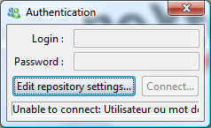
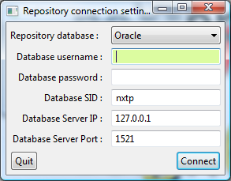
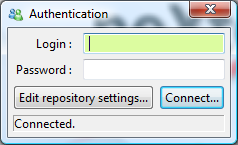

You are connected to the repository when neXtep designer starts. On the very first run of neXtep designer, the repository connection will not be defined and you will need to define it.
|
 |
 |
 |
These 3 screenshots show you the different states of repository connection. If the repository connection fails (which will always be the case when you run neXtep designer for the very first time), click on “Edit repository settings” to fill-in the correct information to connect to your repository database.
Contact the database administrator who installed the repository to get these settings if you do not already have them. When the information is correct, you will see the authentication dialog back again with the Connected status and the login / password text fields will become editable.
Go on with authentication.